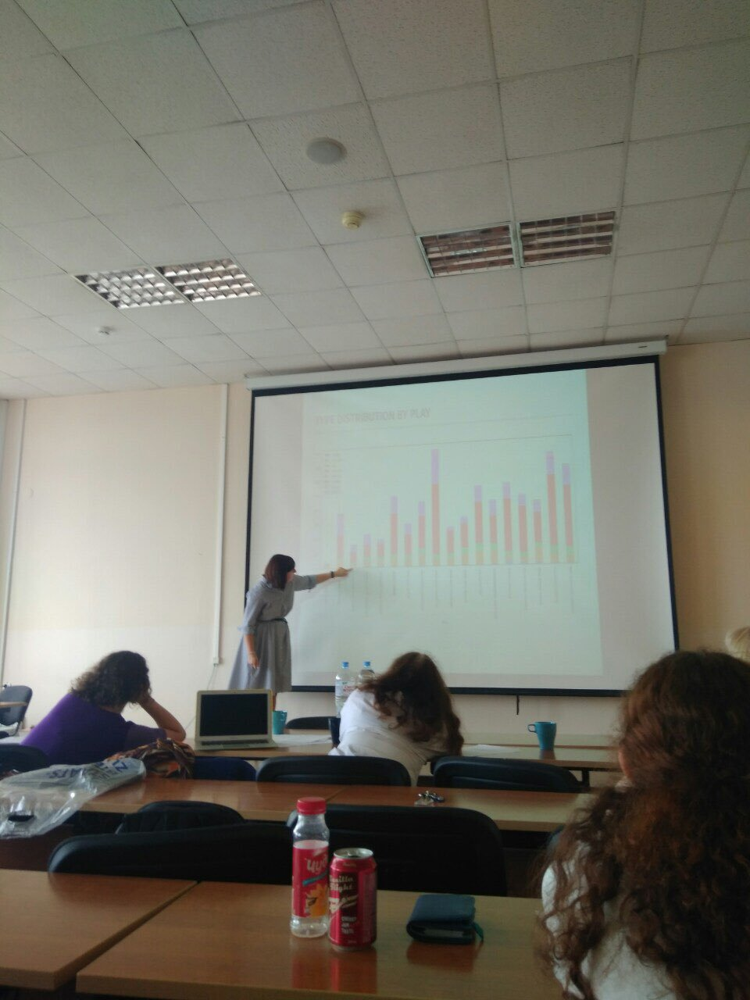
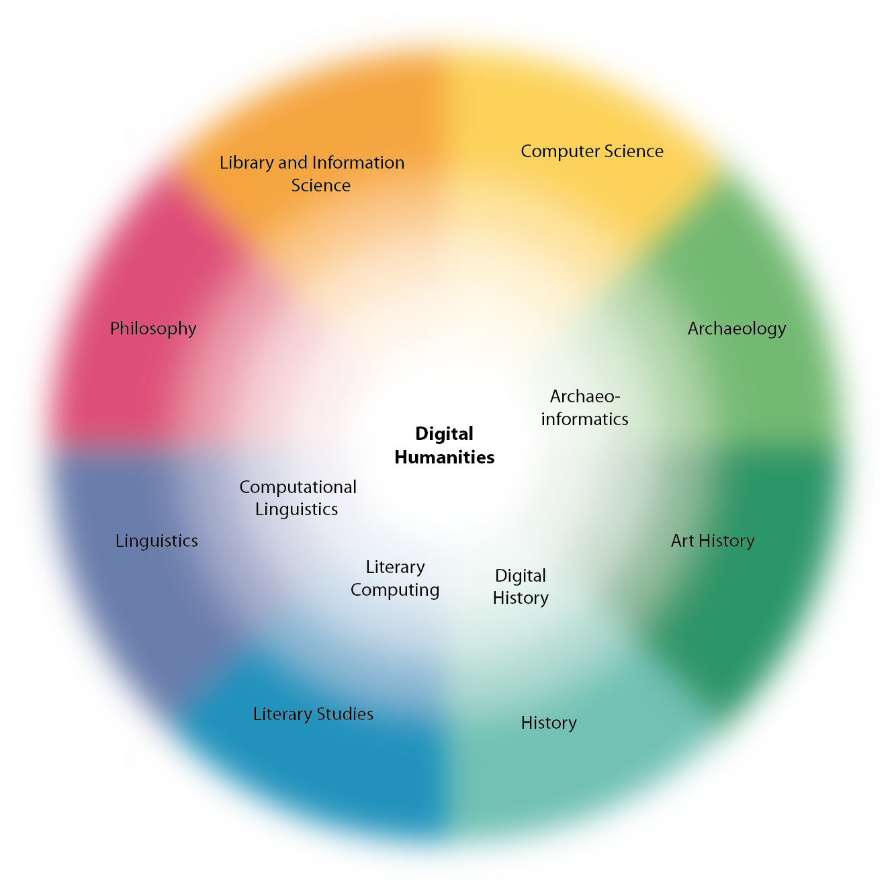
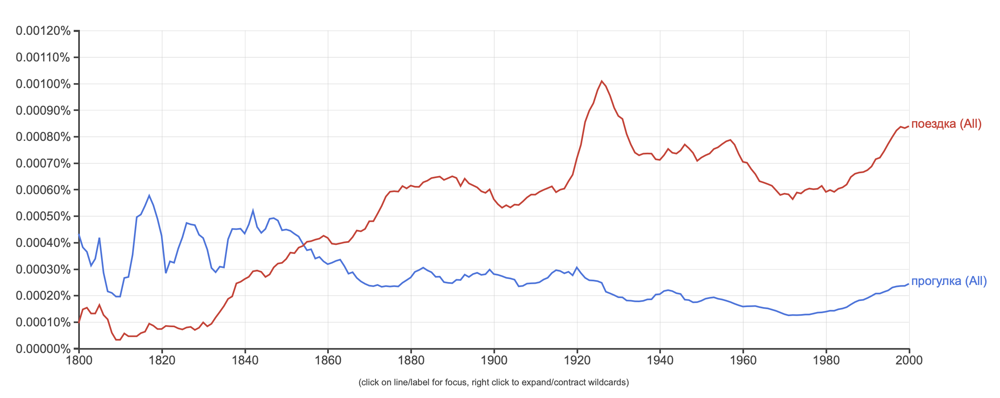
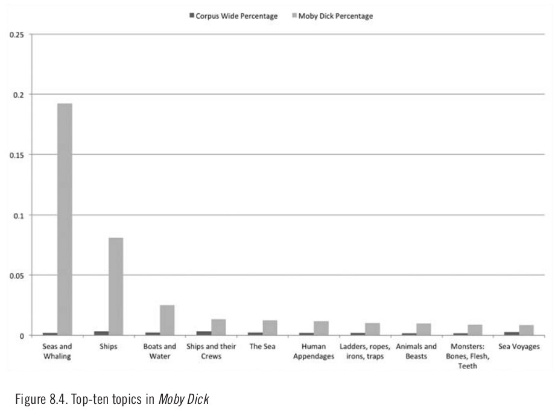
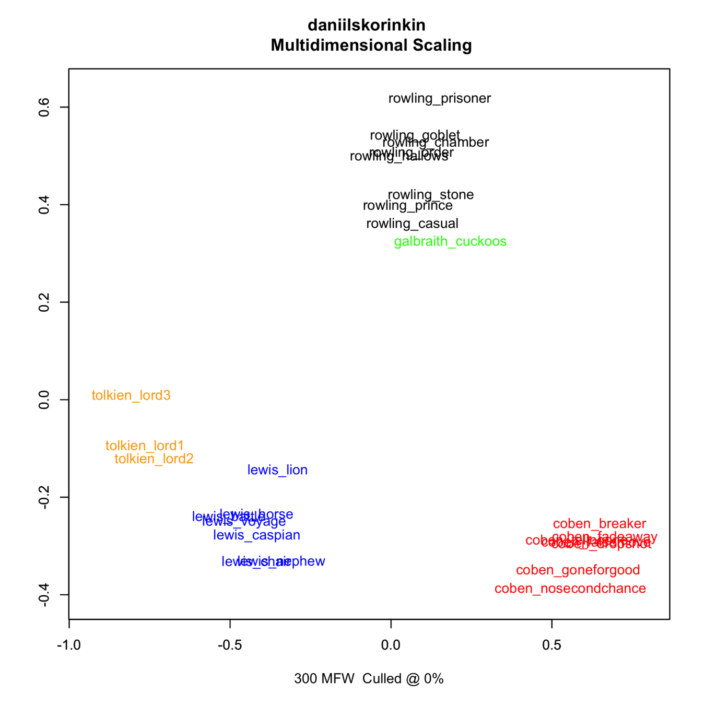

Место, где не выбирают между физикой и лирикой
Знакомство с цифровыми гуманитарными науками
Дарья Максимова, НИУ ВШЭ–Москва / DraCor
twi: @dmmxmva ·
mail: daria.maximova.m@gmail.com
Эти слайды: http://bit.ly/2qIgnbD
28 октября 2019 года · школа №192
Давайте знакомиться

Это я защищаю свой бакалаврский диплом.
Вышка, камера айфона, июнь 2019, ужасная жара
Это я защищаю свой бакалаврский диплом.
Вышка, камера айфона, июнь 2019, ужасная жара
План на сегодня
- Что такое digital humanities? 🤓
- Как одновременно писать код и считаться гуманитарием? 👩💻
- Как прочитать миллиарды книг за пару секунд? 📚
также в программе: Секреты Джоан Роулинг 🕵️♀️ - Перерыв ☕️
- Исследуем Песнь льда и пламени ⚔️
Что такое цифровые гуманитарные науки?
«Цифровые? Гуманитарные? Даш, может, лучше потратишь бюджетную магистратуру на что-то осмысленное?»
(с) моя мама
Ну есть же целый сайт: whatisdigitalhumanities.com
— И на нём 817 определений!
Цифровая гуманитаристика? Цифровые гуманитарные науки? Digital Humanities?
— На самом деле это дело вкуса.
А что мы знаем точно?
— Что мы используем цифровые технологии на гуманитарном наследии.
Зонтичность
…никогда не знаешь, каким путём ты окажешься в DH:
 Patrick Sahle (2013): “DH Studieren! Auf dem Weg zu einem Kern- und Referenzcurriculum der Digital Humanities“.💻 + 📚 = ❤️
«Ну да, ну да, конечно, программирование и литература, ага»
(с) одноклассники
Дальнее чтение
- ближнее чтение: внимательное чтение и интерпретация всех нюансов текста вместо фокуса на исторических, филологических и биографических деталях/контекстах
- идея: какие-то детали невозможно увидеть при внимательном прочтении книги и помещении её в контекст, нужна абстракция
- абстракция → переходим к модели текста → дальнее чтение
- NB: не противопоставляется, а дополняется
Пример 1: сети персонажей
 Сеть персонажей «Бориса Годунова» (А.С. Пушкин)
Сеть персонажей «Бориса Годунова» (А.С. Пушкин)Источник: Соцсети русской драмы, часть I: основы сетевого анализа (Е. Устинова для Системного Блока)
Пример 2: Google Ngram Viewer
Пример 3: тематическое моделирование
 Тематическое моделирование в "Моби Дике", сравнённое с 3 345 другими романами.Источник: Jockers, M. (2013). Macroanalysis: Digital Methods and Literary History.
Пример 4: ловим за руку Джоан Роулинг
Пример 4: ловим за руку Джоан Роулинг
Вопросы?
Практика
Google Books Ngram Viewer
books.google.com/ngramsVoyant Tools
- Game of Thrones: bit.ly/32QqCbT
- Интерфакс: bit.ly/36aQ3qR
- Война и мир: bit.ly/2MOzQjn
Спасибо!
Следите за нашими новостями:
- Центр цифровых гуманитарных наук НИУ ВШЭ:
vk /dhchse, inst @digitalhumanitieshse - Магистратура:
vk /dhmaga
Читайте нас: «Системный Блокъ»
- vk /sysblok
- tg @sysblok
- youtube Системный Блокъ